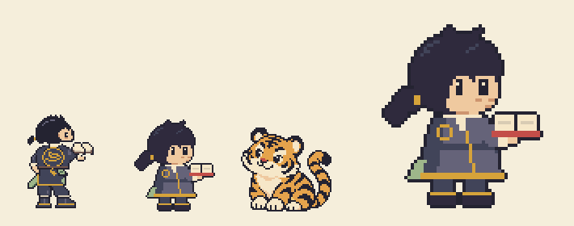
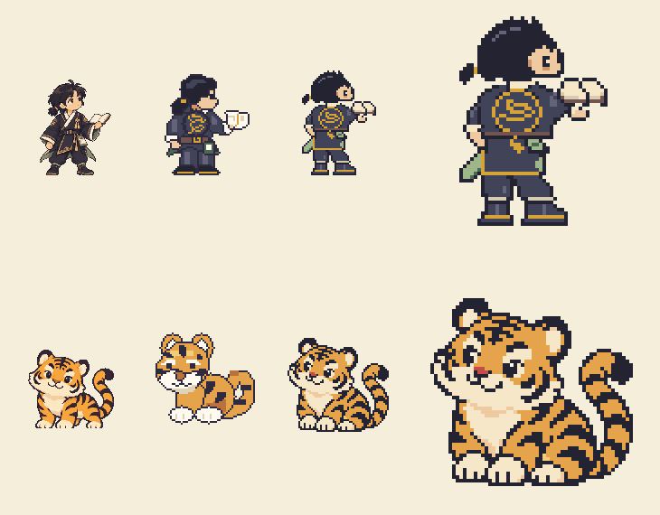

Codex 원화(주인공 후보4·호랑이 후보3)를 바탕으로 pxl로 64×64칸을 만들었습니다. dot-audit 위반 0. 아직 게임에 연결하지 않았습니다.
왼쪽부터 주인공 1차 · 주인공 2차 · 호랑이(확정) — 모두 실제 크기, 오른쪽은 주인공 2차 4배. 원본: 클로드도트/원본/주인공-대기.px.js

왼쪽부터 지금 게임 그림 · [요청9] 견본 · 새 그림(실제 크기 128px) · 새 그림(4배)

원본/native.mjs) → 공용 팔레트 7색으로 정리(topxl.mjs) → 한 칸짜리 점 39개 자동 정리(fix.mjs).원본/reader.rows: 머리 → 얼굴 → 몸통 → 문양 → 팔·책 → 치마·다리).